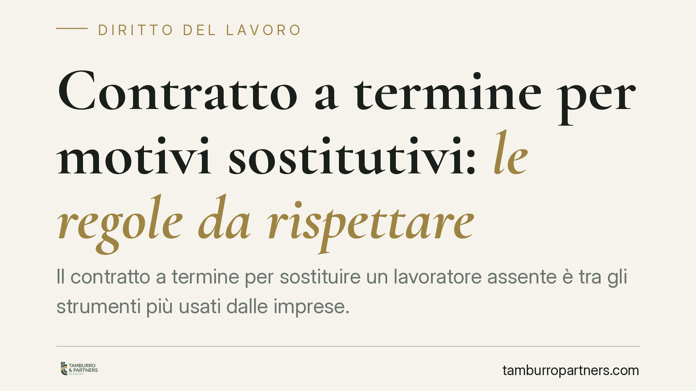

Contratto a termine per motivi sostitutivi: le regole da rispettare
Il contratto a termine per sostituire un lavoratore assente è tra gli strumenti più usati dalle imprese. Ma la causale sostitutiva ha regole precise: se manca la specificità, il rapporto può convertirsi a tempo indeterminato. Vediamo cosa prevede la normativa dopo il DL 48/2023 e quali cautele adottare per evitare contenzioso.

Inquadramento normativo
Il contratto a tempo determinato è disciplinato dagli articoli 19 e seguenti del D.Lgs. 81/2015. Dopo le modifiche del D.Lgs. 87/2018 (Decreto Dignità) e da ultimo del DL 48/2023 (convertito in L. 85/2023), l'apposizione del termine oltre i dodici mesi richiede una causale che rientra in tre binari.
Il primo: le esigenze previste dai contratti collettivi ai sensi dell'art. 51 del D.Lgs. 81/2015. Il secondo (art. 19, co. 1, lett. b): in assenza di previsioni del CCNL, le esigenze di natura tecnica, organizzativa o produttiva individuate dalle parti; questo regime transitorio operava fino al 30 aprile 2024 ed è ormai superato. Il terzo, che qui interessa, è la sostituzione di altri lavoratori (art. 19, co. 1, lett. b-bis), causale stabile e non soggetta a termini transitori.
La causale sostitutiva impone di indicare per iscritto il motivo dell'assenza (maternità, malattia prolungata, aspettativa, ferie) e, secondo l'orientamento della giurisprudenza di legittimità sulla specificità della causale, di consentire l'individuazione del lavoratore sostituito o comunque della funzione da coprire. Genericità e formule di stile espongono al rischio di nullità del termine.
Implicazioni pratiche
Per il datore di lavoro. La causale sostitutiva è più solida delle altre perché la ragione (l'assenza da coprire) è oggettiva e documentabile. Restano fermi i limiti generali: durata massima 24 mesi sommando tutti i rapporti a termine tra le stesse parti per mansioni di pari livello (art. 19, co. 2) e massimo quattro proroghe nell'arco dei 24 mesi (art. 21, co. 1). Superati questi limiti, il contratto si considera a tempo indeterminato.
Un vantaggio operativo rilevante: per la causale sostitutiva non si applica lo stop-and-go. L'art. 21, co. 2, del D.Lgs. 81/2015 fissa in via ordinaria un intervallo minimo tra un contratto e il successivo — 10 giorni se il precedente ha durata fino a sei mesi, 20 giorni se superiore — ma l'ultimo periodo della norma esclude espressamente da questo obbligo i contratti conclusi per ragioni sostitutive. Ciò consente di far subentrare senza soluzione di continuità un secondo sostituto.
Per il lavoratore. Se la causale è generica o non veritiera, o se vengono superati i limiti di durata e proroga, si può chiedere in giudizio l'accertamento della nullità del termine e la trasformazione del rapporto a tempo indeterminato. L'impugnazione del contratto a termine segue il doppio termine: 180 giorni dalla cessazione per l'impugnazione stragiudiziale e ulteriori 180 giorni per il deposito del ricorso o la comunicazione della richiesta di tentativo di conciliazione (art. 28 D.Lgs. 81/2015, che richiama l'art. 6 L. 604/1966).
Sul piano economico, va ricordato che i contratti a termine scontano il contributo addizionale NASpI dell'1,4% sulla retribuzione imponibile, con incrementi in caso di rinnovo; sono previste esenzioni specifiche, tra cui alcuni casi di sostituzione. Il profilo va verificato nel caso concreto.
La carenza di specificità della causale è tra le principali cause di contestazione: il costo di una conversione, anche solo potenziale, giustifica una redazione accurata del contratto.
Cosa fare in concreto
- Scrivi una causale specifica. Indica il nominativo o la funzione del lavoratore sostituito e il motivo dell'assenza. Evita formule generiche come "esigenze sostitutive".
- Conta la durata complessiva. Somma tutti i rapporti a termine per mansioni di pari livello: il tetto è 24 mesi. Al superamento scatta l'indeterminato.
- Verifica le proroghe. Massimo quattro nell'arco dei 24 mesi. Ricorda che per la causale sostitutiva non serve rispettare l'intervallo dello stop-and-go tra contratti successivi.
- Conserva la documentazione dell'assenza. Certificati, provvedimenti di aspettativa o comunicazioni di maternità provano la genuinità della causale in caso di contestazione.
- Rispetta i termini di impugnazione. Il lavoratore che intenda contestare il termine deve muoversi entro 180 + 180 giorni dalla cessazione.
Disclaimer
Contributo informativo a cura di Tamburro & Partners Avvocati. Non costituisce parere legale.
Ogni storia di lavoro ha i suoi tempi.
Se gestisci HR e vuoi un confronto su contenzioso, ispezioni o licenziamenti, scrivi allo studio. Ti rispondiamo entro un giorno lavorativo.